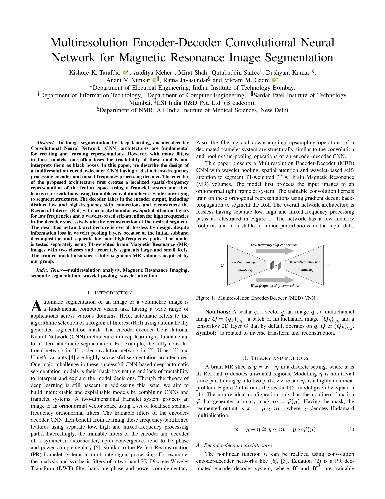
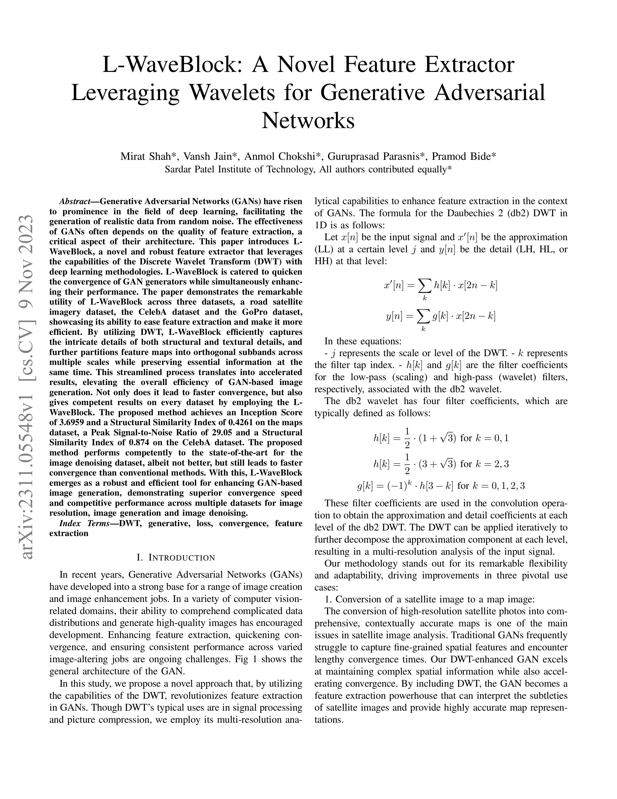
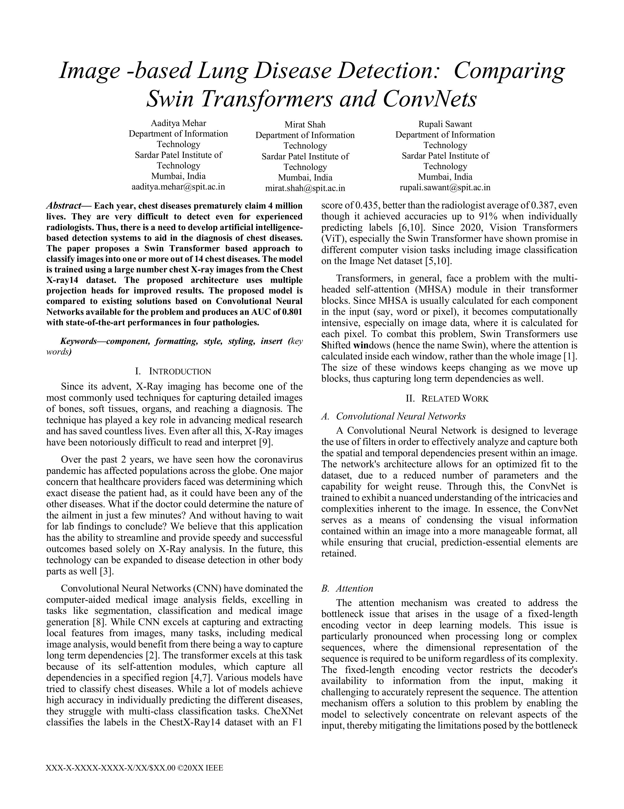

Updates
- May 2025: Machine Learning SDE Summer Intern at Amazon Web Service (AWS)
- April 2025: Paper titled "Multiresolution Encoder-Decoder Convolutional Neural Network for Magnetic Resonance Image Segmentation" to appear at ICASSP 2025, Hyderabad
- September 2024: Joined Khoury College of Computer Science, Northeastern University, Boston as a Master's student
- May 2024: Graduated with a Bachelor's in Information Technology from Sardar Patel Institute of Technology
|
Research
I'm passionate about Large Language Models, LLM Inference, computer vision, deep learning, and generative AI. I am curious to solve problems where I can design efficient and light-weight models.
|
|

|
Multiresolution encoder-decoder CNN for image segmentation, utilizing distinct low- and high-frequency processing paths with wavelet-based attention to accurately segment regions of interest in MR images.
|
|

|
A feature extractor that integrates Discrete Wavelet Transform with deep learning to accelerate GAN convergence and improve image generation performance across multiple datasets.
|
|

|
A comparitive study of Swin Transformer-based model and traditional CNN for classifying chest diseases from X-ray images, achieving state-of-the-art performance and outperforming traditional CNN-based approaches in detecting multiple pathologies.
|
Teaching Experience
- Teachinng Assistant for Object Oriented Design, assisted Prof. Nunez Lucia at Northeastern University for Fall 2024 semester
- Teaching Assistant for Data Structures and Algorithms assisted Prof. Varsha Hole at Sardar Patel Institue of Technology for Spring 2022 semester
|
Honors and Awards
- Invited Chief speaker at Association of Computer Science Engineering Students AI and ML Summit 2023
- Awarded 80% Tuition grant by Credit Suisse Scholarships for undergraduate studies
- Winner at Inter-branch hackathon S.P.I.T.’22
- State Topper in Mathematics and Statistics – Secondary School Board Examination
|
Voluntary Work
- Volunteered to assist underprivileged students
through doubt-solving sessions in English, Math, Science, and Computers, at Abhyudaya, S.P. Jain Institute of Management & Research
|
Source code credit: Jon Barron
|
{kind=link}